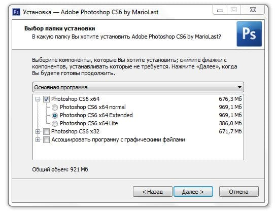

Характеристики программы
Adobe photoshop extended – графический редактор многофункционального назначения, который создан известной фирмой Adobe Systems, давно заслужившей доверие многих пользователей. Эта версия создана в основном для пользователей, имеющих опыт в сфере фотошопа. С ее помощью производится монтаж фильмов, обработка видеофайлов, создаются мультимедийные проекты. Adobe photoshop extended используется в основном профессионалами при создании архитектурных материалов, работ медицинской направленности, а также в научных исследованиях.
Особенности данной версии
Учитывая тот факт, что программа изначально разрабатывалась в качестве редактора полиграфии, на сегодняшний день она уже применяется в области веб-дизайна. В версии Extended добавлена возможность использования трехмерных файлов. Помимо этого, стали доступными опции, предназначенные для обработки моделей формата 3D. Появилась возможность создания разных надписей на объектах 3D. Создана функция преобразования фотографий в трехмерные модели.
Есть бесплатный аналог Photosop для тех кто не хочет пользоваться пиратками и взломаным фотошопом.
С Adobe photoshop extended можно воссоздать видеоизображение на пиксельных пропорциях. В целом Adobe можно назвать незаменимым редактором, используемым большим количеством людей. Программа проста в применении, обладает высокой скоростью.
Если скачать Adobe photoshop версии extended — это будет идеальным решением, которое обладает обширными возможностями композитинга и редактирования, в нем присутствуют новейшие технологии, необходимые в процессе создания анимационных материалов.
Внимание!
В данный момент Adobe photoshop extended доступен в версии Adobe photoshop кс6 достаточно перейти по ссылке и скачать установкщик далее после выбора языка выберите нужный компонент в нашем случае это extended.
|  |
Я вообще доверчивый, но впечатление такое, что все комментарии написаны одним и тем же человеком, который работает в каком-то рекламном отделе… причём, судя по казённым формулировкам и редко применяемым в разговорной речи словах, работает там недавно… Даже не знаю теперь, устанавливать или на других сайтах искать… стрёмно… Вот, блин, ну зачем так делать?(
уверяю вас что не один человек писал ))
Автору спасибо.
а еще посты на эту тему будут в будущем?
Сайт хорош, слов нет.
За статью огромная благодарность, все по делу.
Давно увлекаюсь фотошопом, очень интересно. Некоторые функции можно с легкостью освоить с первого раза, а благодаря видео из ютуба можно профессионально научиться работать с этой программой.
Лучшей способ для освоения программы фотошоп это конечно же ютуб, где я и смотрела все видео уроки, и спустя пару месяцев я в превосходстве научилась пользоваться этой программой.
Я уже около пяти лет работаю дизайнером в одной очень престижной компании, и если бы не мои знания владения программой фотошоп то врят ли я смог бы найти эту довольно таки легкую работу.
Работаю в Extended версия Adobe photoshop фотошопе уже давно и говорить что это программа неспособна не на что значит солгать, так как программа мне во многом помогает лично я в ней очень часто обрабатываю фотографии.
Сейчас фотошопом, на мой взгляд пользуются пользователи из разных слоёв населения, и подростки и уже относительно старые. Extended версия подходит не для всех, а для тех, кто хорошо изучил обычную версию, и особенно она полезна для специалистов по дизайну.
Ух ты… Я только успела подружиться с 6 версией photoshop, как разработчики решили создать нечто новенькое. Думаю, что мне будет очень интересно попробовать свои навыки в работе с этой программой и научиться-таки делать трёхмерные модели.
Достаточно давно увлеклась фотографией и видеосъемкой. Недавно попробовала работать с программой ADOBE PHOTOSHOP EXTENDED. С этой программой существенно улучшилось качество работы, появились новые возможности. Увеличилась скорость работы.
Супер! Программа то, что надо! Искала программу для монтажа видео, и вот я нашла это чудо! Эта программа во всем лучшая, уж не думала, что adobe photoshop сделает такую полезную новинку! Рекомендую!
Это очень хороший графический редактор Photoshop extended. С его помощью можно научиться таким приемам в обработке фотографий ,как ретушь и цветокоррекция, трансформация, цветоделение и создание коллажей. Можно убирать несовершенства на фотографиях,изменять цвет волос,глаз и т.д.
Занимаюсь веб-дизайном уже достаточно давно , успел перепробовать кучу различных программ , но решил становиться именно на этой , так как здесь достаточно удобный интерфейс , качественно русифицированный меню , ну и конечно же огромный спектр возможностей …
Это моя любимая программа, очень удобная, обожаю делать тексты на ней, шрифты получаются классными, особенно когда делаю обводку в слоях и потом ставлю шрифт надутый, очень красиво, для различных оформлений групп — это важно.
Программу эту недавно скачала и тут же обломалась. Все как-то напутано и непонятно. Не могу ничего разобрать. Чтобы работать с этой программой необходимы знания и навыки. Если вы новичок у вас ничего не получится.
Сейчас изучаю ее, руководствуясь различными пособиями, в частности смотрю видеоуроки на ютюбе. Все понятно и просто. С этой программой можно многое сделать. Буду учить дальше. Захватывает.
Не мало я наигралась с этой програмкой, зато сейчас гордо могу сказать, что хорошо освоила ее. Теперь и на работе частенько пользуюсь ею. Советую выучить — знания не тяжелы, а в жизни пригодится.
Отличная программа для растровой и векторной графики.
Обычно я пользовалась фотошопом для бытовых целей (красные глаза убрать, подкорректировать), но с приобретением опыта захотелось чего-нибудь поинтереснее.
Так и наткнулась на EXTENDED:) Оправдал мои ожидания, отличный графический редактор нового времени. Для иллюстратора (коим являюсь) вещь вообще незаменимая.
Но хотелось бы предупредить, что у новичков данная программа вряд ли вызовет интерес.
Интерфейс программы простой, но чтобы освоиться «непосвященному» желательно изучить пару-тройку пособий)
Для создания любительской анимации перепробовал множество вариантов. Некоторые были слишком сложными, другие — наоборот, слишком элементарные с недостаточным количеством функций. А в Adobe photoshop Extended как раз наиболее удобно сочетаются и удобство и функциональность.
Я люблю когда фото сделано проффесионально, но обращаться к специалистам — дорого. И я решила сама освоить фотошоп. Выбрала версию Adobe photoshop extended . Разобралась не сразу. Но теперь могу сама обрабатывать свои фотки, я добавляла насыщенности и потом мне нужно было конвертировать фотку в другой формат. Все получилось.
ADOBE PHOTOSHOP EXTENDED — не редактор, а волшебник. Пробую свои силы в 3d анимации, пока только учусь, и для меня это просто находка. Прост в обращении, без заморочек, пользуюсь уже неделю, а ещё не изучил до конца всех возможностей этой программы.
extended — это просто расширенный набор инструментов. Начиная с 3 версии, возможны вариации организации рабочего стола и инструментария в photoshop. Соответственно, extended — это просто полный набор инструментов. Начиная с четвертой версии, в расширенном наборе инструментов также доступны непоторые действия в 3D
Работал с ADOBE PHOTOSHOP, версии CS5. Делал самые простейшие операции. Понравилось, хотя и пришлось неоднократно либо в книжку заглянуть, то в Интернет, чтобы узнать даже элементарные вещи. Хорошо, что в версии Extended имеется возможность работать с трехмерными файлами. Это интересно, точно!
А вот когда я училась работать в фотошопе то, я брала самые простые фотографии и пробовала их изолировать от фона, а уже потом начала ретушировать, и где то уже через неделю освоила эту программу.
Мы с моей сестрой проходили курсы по изучению программы фотошоп и тогда мы только изучили некоторые возможности этой многофункциональной программы, но спустя годы мы начали работать профессионально обрабатывать фотографии на заказ и нам эти уроки пригодились.
Разработчики постарались на славу и выдали расширенную пользовательскую версию фотошопа на ура. Появились многие полезные дополнения, отсутствующие в обычных версиях. Имеется синхронизация с Bridge, что зачастую для меня очень удобно.
Версия Extended изначально создавалась компанией Adobe в основном для профессиональных, уже хорошо освоившихся пользователей, веб-дизайнеров и тем. Но в действительности ею пользуются любители и новички порой даже не использовав обычные и более ранние версии фотошопа.
Всегда предпочитал обычной версии PS расширенную Extended. И работаю сейчас только в ней, т.к. любительская обыкновенная не даёт некоторых возможностей программы для пользования.
Разработчики программы хорошо постарались и сделали одну из самых лучших и удачных версий фотошопа, которой и по сей день пользуются много людей по всему миру, я тут не исключение. Ребят мне нужен Русификатор для adobe photoshop extended а то уже замучился после переустановки фотошопа((
да качай 6 cs на этом сайте она русифицирована
С каждой последующей версией фотошопа становится все более сложнее (лично для меня) адаптироваться к все более нарастающему функционалу. Extended версия это дополненная обычная версия, несомненно необходимая любому, кто занимается веб-дизайном.
Широчайший функционал : приложение bridge , camera row просто незаменимы для фотографа. Возможность создавать и редактировать 3D обЪекты. Куча новых фильтров и возможностей. Занимаюсь фотошопом профессионально , но сомневаюсь , что изучу их когда-нибудь до конца.
Вчера только делал аватрки для своих групп в Одноклассниках и В контакте на данном фотошопе, очень понравилось то, что программка не грамма не тормозила, просто обычно у меня все виснет на другой, из-за того что мой ноут уже очень старый…
Пользуюсь последней версией фотошопа Extended и мне больше всего нравиться в ней широкий набор функций и возможностей, особенно новая вкладка в панели «3D». Потом когда переустанавливал винду скачал обычный фотошоп и как то не привычно и ограниченно.
Работая свадебным фотографом я для себя поняла одно, если пользоваться только качественным софтом то, всегда будет получатся все самое красивое и лучшее, да к тому же с таким интерфейсом программы. Вот недавно понадобился Ключ для adobe photoshop cs5 и cs6 extended есть либо кряк?
Лично для меня главным плюсом, превосходящим верию PS Extended от обычной версии является наличие редактирования трёхмерных объектов. Можно создавать текст и фигуры и прочее в 3D.
После того как начинаешь работать в профессиональной программе фотошп тебе уже не хочется переходить на более примитивные программы, это я на своем опыте убедился, ведь только в фотошопе такой огромный функционал которым не может похвастаться ни одна другая.
Кто бы что ни говорил но лучше фотошопа может быть только сам фотошоп, сам я работаю в этой многофункциональной программе уже пять лет, и благодаря ей у меня все вовремя получается.
Посмотрел расширенную версию фотошопа. Уверен, что большинству рядовых пользователей она не нужна, это инструмент для тех, кто давно и серьезно работает с графикой. А то у нас народ любит фотошоп ставить, чтоб картинки по краям обрезать:)
вы не правы, то самое большинство (с школотой впридачу) в cs рубится, многие свой скин пытаются делать, а без 3D и наложения текстуры никак